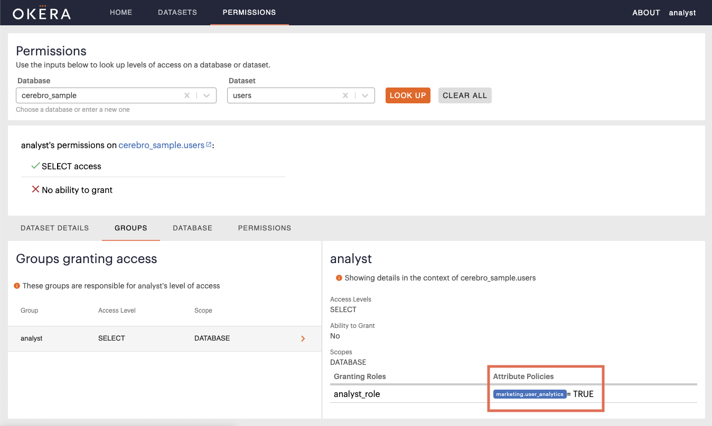

Okera Portal for Administrators
Managing access to UI features
Admins can control access to certain UI features by granting access to certain system views, or by using our out of the box access roles okera_workspace_role and okera_reports_role.
Note These system views do not contain any data, their sole purpose is to control access.
Granting access to Workspace
To grant access to the Workspace page, simply grant a role access to the internal okera_system.ui_workspace view.
GRANT SELECT ON TABLE okera_system.ui_workspace to ROLE steward;
We have also included an out of the box role okera_workspace_role, so you can simply grant that role to any groups that need access to the workspace feature.
GRANT ROLE okera_workspace_role to GROUP marketing_stewards;
Granting access to Reports Page
To grant access to the Reports page, simply grant a role access to the internal okera_system.ui_reports view. Note that this view does not contain any data, its sole purpose is to control access to reporting.
GRANT SELECT ON TABLE okera_system.ui_reports to ROLE steward;
We have also included an out of the box role okera_reports_role, so you can simply grant that role to any groups that need access to the Reports feature.
GRANT ROLE okera_reports_role to GROUP marketing_stewards;
Note Users will still need to have ALL access on some datasets to actually see reports for those datasets.
User Permissions Lookup
If you have ALL access on a particular object (database or dataset), you have access to its administrative features and are considered an admin for that object.
As an Admin you will also see a user/group input box on the Permissions page next to database and dataset. Here you can input any username or group name to understand their access on an object.
Note: if the user and group name are the same, the permissions lookup will default to looking up the user.

Depending on if that user has access or not to the specified object, you will see this information:
Access Summary
Gives a quick summary on if that has user access or not, what level of access, to what data, and if they have the ability to grant or not for that object. To understand the privilege levels please see Privileges.
Dataset Details Tab
Shows the dataset details, as well as the schema as that particular user would see it.
Groups Tab
If the user has access, this tab shows the list of groups responsible for that user’s access to the specified database or dataset.
Database Tab
Shows that user’s access to the specified database.
If the user only has access to specific datasets inside that database, it will show you a list of these.
Clicking on one of these datasets then shows the list of groups responsible for access to that specified database or dataset.
Permissions Tab
Shows the full list of groups that have access to the specified database or dataset.
Any group not in the available list has no access to the specified database or dataset.
Attribute Expressions
In any detail section for groups providing access, if some attributes are granting access per Attribute Based Access Control, you will see those expressions listed alongside the role specified in the grant:
